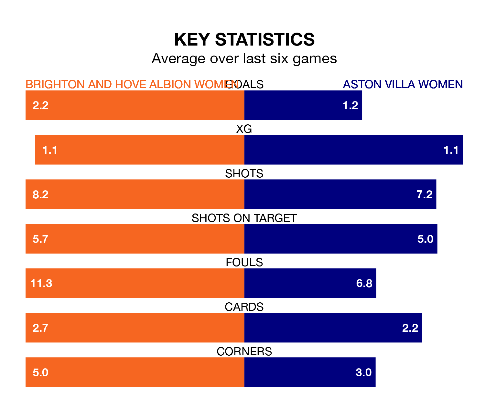

Aston Villa Women travel to Brighton and Hove Albion Women on Saturday lunchtime in the FA Women's Super League.
The visitors come into the game on the back of a draw in their last match, having tied with West Ham United Women 1-1 at home, with a goal from Alisha Lehmann.
The Seagulls also drew their last match, 1-1 against Tottenham Hotspur Women, with their goal scored by Elisabeth Terland.
In Terland, Brighton & Hove Albion have one of the league's sharpest shooters so far this season. She has notched 13 goals in 20 appearances, to sit second in the scoring charts.
Her goal rate of one every 124 minutes is quicker than that of Rachel Daly, Aston Villa's top scorer with a goal every 231 minutes, and a total of seven goals in 18 games.
In the last 10 years, Brighton & Hove Albion and Aston Villa have played each other on 12 occasions. They won five each, and they drew twice.
On average, the Seagulls scored 1.2 goals and the Villa 1.5 in those matches.
Their last meeting was on February 7, when they played out a 1-1 draw.
With 25 goals in 20 games so far this season, the Villa are scoring at below the league average rate with 1.2 goals per game. And they are conceding more than average, letting in 41 goals at a rate of 2.0 per game.
The Seagulls are also below average scorers, with 1.3 goals per game, compared to a league average of 1.6. They have conceded 2.1 goals per game.
The home team are in mixed form in the FA Women's Super League, with two wins and two draws from their last six games.
With a win and two draws over that period, the visitors' form is worse – they have taken five points from 18, compared to Brighton & Hove Albion's eight.
Brighton & Hove Albion are eighth in the table after 20 games, of which they have won five and drawn four, earning 19 points.
Aston Villa are one place ahead of the Seagulls in seventh, with six wins and three draws putting them on 21 points.
Updated: 10:44 (UTC), 30/04/24